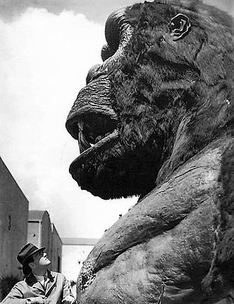

King Kong, also referred to simply as Kong, is a fictional giant monster, or kaiju,[17] resembling a gorilla, who has appeared in various media since 1933. Kong has been dubbed the King of the Beasts,[18] and over time, it would also be bestowed the title of the Eighth Wonder of the World,[19] a widely recognized expression within the franchise. His first appearance was in the novelization of the 1933 film King Kong from RKO Pictures, with the film premiering a little over two months later. A sequel quickly followed that same year with The Son of Kong, featuring Little Kong, also known as "Kiko". The Japanese film company Toho later produced King Kong vs. Godzilla (1962), featuring a giant Kong battling Toho's Godzilla, and King Kong Escapes (1967), a film loosely based on Rankin/Bass' The King Kong Show (1966–1969). In 1976, Dino De Laurentiis produced a modern remake of the original film directed by John Guillermin. A sequel, King Kong Lives, followed a decade later featuring a Lady Kong. Another remake of the original, set in 1933, was released in 2005 by filmmaker Peter Jackson. Kong: Skull Island (2017), set in 1973, is part of Warner Bros. Pictures and Legendary Entertainment's Monsterverse, which began with a reboot of Godzilla in 2014. A sequel, Godzilla vs. Kong, once again pitting the characters against one another, was released in 2021. It was followed by the film Godzilla x Kong: The New Empire in 2024, which featured more of Kong's kind. The character is an international pop culture icon,[20] having inspired a number of sequels, remakes, spin-offs, imitators, parodies, cartoons, books, comics, video games, theme park rides, and a stage play.[21] King Kong has also crossed over into other franchises, such as Planet of the Apes,[22] and encountered characters from other franchises in crossover media, such as the Toho movie monster Godzilla, pulp characters Doc Savage and Tarzan, and the Justice League.[23] His role in the different narratives varies, ranging from an egregious monster to a tragic antihero.
OverviewKing Kong graphics at the Empire State Building The King Kong character was conceived and created by American filmmaker Merian C. Cooper. In the original film, the character's name is Kong, a name given to him by the inhabitants of the fictional "Skull Island" in the Indian Ocean, where Kong lives along with other oversized animals, such as plesiosaurs, pterosaurs, and various dinosaurs. An American film crew, led by Carl Denham, captures Kong and takes him to New York City to be exhibited as the "Eighth Wonder of the World".
Kong escapes and climbs the Empire State Building, only to fall from the skyscraper after being attacked by weaponized biplanes. Denham comments, "It wasn't the aeroplanes, it was beauty killed the beast", for he climbs the building in the first place only in an attempt to protect Ann Darrow, an actress originally kidnapped by the natives of the island and offered up to Kong as a sacrifice (in the 1976 remake, her character is named "Dwan").
this is a link